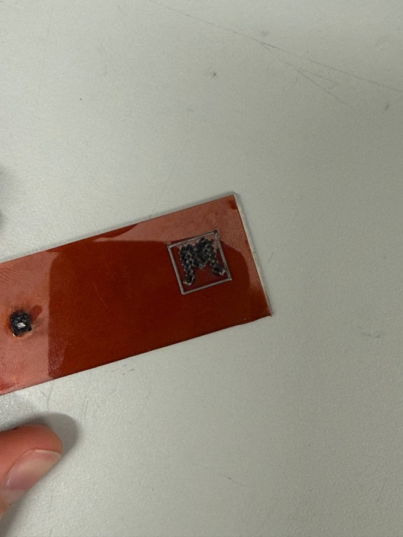
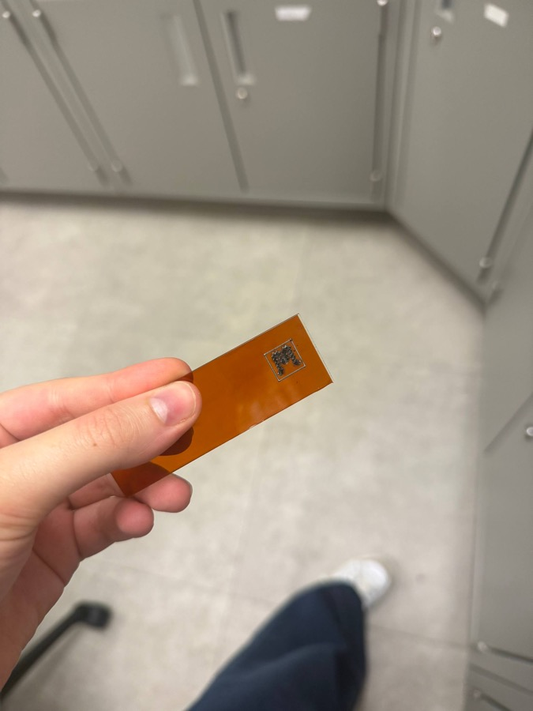
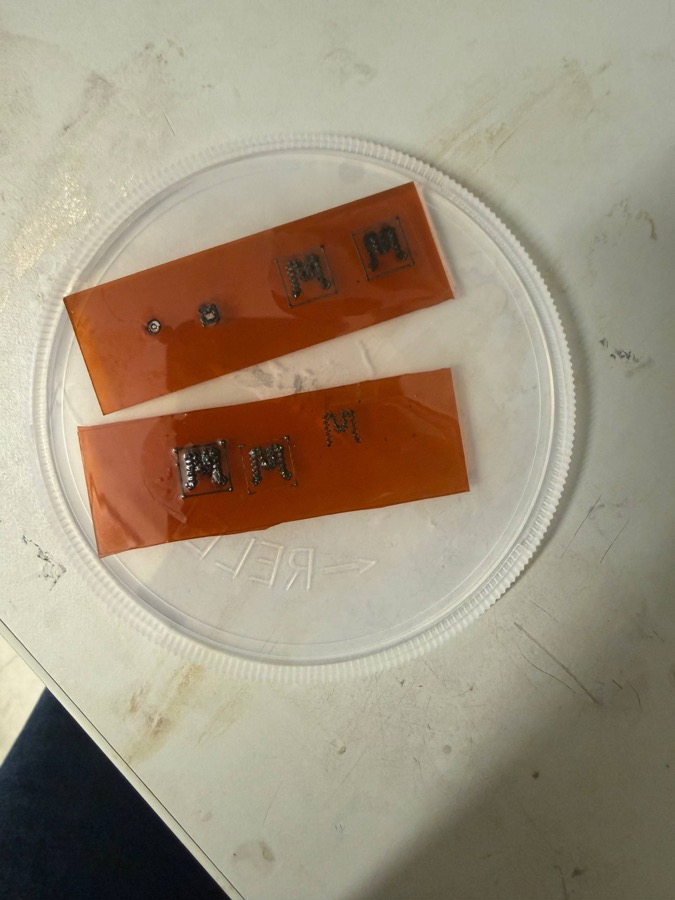

Building things, then explaining why they work.
Mechanical Engineering student · Lassonde School of Engineering, York University
I'm a second-year Honours Mechanical Engineering student. I like problems that need both a working prototype and a clear explanation of why it works — from a laser-fabricated strain sensor in the lab to a technical report on wind turbine engineering. This portfolio was built for ENG2003 (Effective Engineering Communication) to showcase that work and reflect on how I've grown as a communicator this year.
About
I'm a motivated Mechanical Engineering student with experience in multidisciplinary design projects and system-based problem solving. I'm skilled in analytical thinking and technical reasoning, and I adapt quickly to new engineering concepts — whether that's a sensor-based lighting system, a Java simulation, or a laser-fabrication process I'd never touched before this summer.
Outside coursework, I work as a Research Assistant at York University, where I fabricate and characterize laser-induced graphene (LIG) strain sensors — see Beyond the Classroom below. I also tutor mathematics and previously coordinated events for the Iranian Student Association at York, which is where I first started thinking seriously about how I communicate technical ideas to people who don't share my background in them.
I'm currently seeking internship or volunteer opportunities where I can contribute to engineering analysis, design development, and collaborative projects — ideally within aerospace or mechanical engineering environments.
- ProgramHonours B.Eng., Mechanical Engineering
- SchoolLassonde School of Engineering, York University
- Expected GraduationJanuary 2029
- GPA7.7 / 9.0 (as of Fall 2025)
- LocationVaughan, Ontario
Showcase
Three pieces are from ENG2003 this term; the fourth is a design project from outside the course. Expand any row to see why I chose it, what it says about my development as a communicator, and whether it pushed me out of my comfort zone.
A technical report, "Wind Turbine Engineering: Mechanical Solutions to the 21st Century's Clean Energy Grand Challenge," addressing Jim Watson's (UK Energy Research Centre) energy-access grand challenge through the lens of Horizontal-Axis Wind Turbine design — blade aerodynamics, composite structures, direct-drive drivetrains, and floating offshore foundations.
It's the only piece in my portfolio that went through a full draft-review-revision cycle: the final version incorporates peer feedback from Phase 3 (Assess). No other assignment forced me to defend the same argument across four separate rounds.
It shows I can take a broad, somewhat abstract challenge and narrow it into a single, well-supported technical claim — then structure evidence (cost data, deployment figures, engineering trade-offs) around that claim rather than around the order I researched it in.
Yes. Renewable energy systems aren't my usual focus, and this was my first long-form report with formal citations and a discussion section that had to weigh strengths against real limitations rather than just describing a design.
In terms of structure and evidence, yes. If I revised it again, I'd tighten the introduction — it still carries a bit of the "explain everything I learned" habit I mention in my reflection.
A one-page cover letter for the Manufacturing Engineer (Product Launch) posting at Deco Automotive, an automotive-parts manufacturer in Rexdale/Brampton, ON.
It's the piece where audience actually determined content — I had to research Deco Automotive's focus on cycle-time and scrap reduction and connect it to specific experience, not just list qualifications.
It shows I can be honest about gaps (I don't yet have AutoCAD or MIG welding experience the posting asks for) while still making a persuasive case — framing it as a fast learner's trajectory rather than hiding the gap.
Yes — it was my first cover letter written against a real job ad's specific requirements rather than a generic template, and the one-page constraint meant cutting material I initially wanted to keep.
It's my most concise piece. I'd call it my strongest example of the 7 C's in practice — every sentence is doing a specific job.
A one-way, two-question video interview recorded on the Vidcruiter platform — two minutes of prep, then one uninterrupted take per question, no retakes.
It's the only piece here that's spoken rather than written, and the only one I couldn't revise after the fact. That makes it the most honest sample of my unscripted communication style.
It exposed habits — hedging, a slightly rehearsed cadence — that don't show up in written work because writing gives me time to edit them out. Noticing them here is what let me name them explicitly in my reflection.
Completely. One-take, timed, on camera, no do-overs — this was the most uncomfortable assignment in the course by a wide margin.
No, and I say that deliberately — it's included because a portfolio that only shows polished work isn't an honest one. This is my clearest evidence of where I still need to grow.
An adaptive lighting system built around a light sensor, with performance and usability evaluated and optimized using a formal decision matrix rather than informal trial and error.
It's my strongest example of communicating through structure rather than prose — a decision matrix is itself an argument, and building one well means being just as disciplined about criteria and weighting as I would be about paragraph structure in a report.
It shows that "communication" for me isn't limited to writing — a well-built table or diagram can carry an argument more efficiently than a paragraph, provided the criteria are clearly labeled and justified.
Yes — it was my first project combining physical sensor hardware with a formal, quantitative evaluation methodology, rather than pure code or pure prose.
It's my best example of design communication specifically. As a written artifact it's leaner than my term project, but that leanness is intentional — a decision matrix should speak for itself.
Reflection
Drawing on the Axioms of Communication and the 7 C's, here's what this course looked like from the inside — and how it changed the way I write, speak, and present my work.
Going into ENG2003, I expected a fairly standard writing course — grammar, formatting, maybe a presentation. What I got instead was closer to a crash course in professional self-presentation: a cover letter tied to a real job ad, a recorded interview with no retakes, and a term project that forced me to defend a technical position across four separate phases (Phase 1 through the Phase 3 peer-review "Assess" round to the Phase 4 final). That structure surprised me. It wasn't about producing one polished document; it was about practicing the same underlying skill — reading a situation and adjusting my message to it — in enough different formats that it started to generalize.
The most useful content, by a clear margin, was Watzlawick's Axioms of Communication, specifically the axiom that every communication has both a content dimension (what is literally said) and a relationship dimension (what it implies about how the sender wants to be regarded). I noticed this directly while drafting my cover letter for Deco Automotive — an early version was accurate at the content level but read as generic at the relationship level, and only became persuasive once I rewrote it around what the employer needed rather than around what I'd done. The axiom that one cannot not communicate showed up again in the recorded interview: even a pause before answering, or a too-quick answer, communicated something about my confidence whether I intended it to or not.
The topic I found most interesting was the interview assignment, mainly because it was the one place where I couldn't revise my way to a better answer. Written work lets you punctuate and re-punctuate a message with the 7 C's in mind — checking for clarity, concision, and correctness — until it lands; a two-minute, one-take video response doesn't allow that same editing pass. That contrast — between communication I could iterate on and communication I couldn't — taught me more about my default habits (filler words, hedging) than any of the written assignments did, because there was nowhere to hide them.
Before ENG2003, my writing leaned heavily on completeness over concision — two of the 7 C's I now think of as being in tension with each other. If I understood a system, I wanted to explain all of it, in the order I'd learned it, rather than in the order a reader would need it. That habit shows up in early drafts of my Term Project 1 report, where I was tempted to walk through blade aerodynamics, composite structural design, drivetrains, and floating foundations with equal weight regardless of what the argument actually needed. Learning to lead with the claim and the evidence, and let structure follow from that — rather than from the order I did the research — was the single biggest shift in my written work this term.
The skill I improved the most was tailoring a message to a specific audience under real constraints: a hiring manager skimming a one-page letter, an interviewer watching a two-minute unedited clip, a peer reviewer in the Phase 3 Assess round checking whether my recommendation actually followed from my evidence. This connects to the Axioms of Communication idea that participants punctuate a sequence of communication differently — my reviewer and I sometimes disagreed about which part of an argument was the "starting point," and resolving that was itself a communication skill. The skill I still need to work on is verbal delivery under time pressure — my interview recording was clear and on-topic (satisfying correctness and completeness), but I still default to a slightly rehearsed cadence rather than a natural, courteous, conversational one, and that's something no amount of written practice fixes on its own.
Going forward, I expect this to change how I approach lab reporting and design reviews in the rest of my program, and eventually in practice. The research I'm doing this summer on laser-induced graphene strain sensors already involves weekly updates to a supervisor and research group, where I have to state a result, defend the parameters that produced it, and propose a next step — in effect, the same content-and-relationship-dimension, audience-first approach ENG2003 pushed me toward, just applied to a lab meeting instead of a cover letter.
Beyond the Classroom
A look at the research, teaching, and organizing work that shapes how I think about engineering — and the transferable skills each one builds.
Fabricating Laser-Induced Graphene Strain Sensors
Since May, I've been working as a research assistant on a flexible strain-sensor project: using a CO₂ laser to convert polyimide film directly into porous graphene (laser-induced graphene, or LIG), then encapsulating it in PDMS to make a wearable sensor. I designed the sensor geometry in SolidWorks — a serpentine zigzag trace with contact pads at each end — then ran a six-condition sweep of laser power and scan speed to find the fabrication window that actually produces conductive graphene instead of either an unburned insulator or an over-burned, degraded track.



| Power | Speed | Resistance | Outcome |
|---|---|---|---|
| P30 | 1500 mm/min | 32 kΩ | Over-burned — degraded carbon network |
| P30 | 3000 mm/min | ~8 kΩ | Partial carbonization |
| P25 | 1500 mm/min | ~2 kΩ | Partial carbonization |
| P25 | 3000 mm/min | 78 Ω | Best — clean, conductive LIG |
| P20 | 1500 / 3000 | No LIG | Below ablation threshold |
The best condition (P25, 3000 mm/min) produced a resistance of 78 Ω — a 400× improvement over the worst-performing sample — by hitting the narrow energy window that fully carbonizes the polyimide into a porous graphene network without thermally degrading it. From there, I mixed and degassed PDMS (Sylgard 184, 10:1) and cast it directly onto the best sample to begin transferring the sensor onto a flexible, skin-compliant substrate. Next steps include curing and peeling the PDMS, running SEM/Raman to confirm graphene quality, and characterizing the sensor's gauge factor under small applied strain.
This project also means I now report fabrication results and open questions to a faculty supervisor and research group every week — a very different communication context from a course assignment, and one that's directly shaped how I think about the reflection above.
Mathematics Tutor — Darsoon Institute
Teaching math to students with very different starting points forces a different kind of communication than engineering writing: I have to build an explanation live, watch whether it's landing, and adjust on the spot.
Event Coordinator — Iranian Student Association
Organizing student events meant coordinating logistics across a volunteer team — everything ran on clear, concise communication or it didn't run at all.
Education
Expected Jan 2029
York University
- GPA: 7.7 / 9.0 (as of Fall 2025)
- Transferred 21 credits from Computer Science; on track for 57 credits by end of 2026
- Selected EECS courses: Introduction to Computing (A), Computational Thinking through Mechatronics (A+), Object-Oriented Programming from Sensors to Actuators (A+)
- Selected Math/Physics courses: Applied Calculus I (A), Applied Linear Algebra (A+), Applied Multivariate & Vector Calculus (A+), Differential Equations for Scientists & Engineers (in progress), Engineering Mechanics (A+)
Experience
Aug 2026
Research Assistant New
- Fabricated laser-induced graphene (LIG) strain sensors on polyimide via a six-condition laser power/speed parameter sweep, achieving a 400× resistance improvement (78 Ω best vs. 32 kΩ worst) by identifying the optimal carbonization window
- Designed sensor trace geometry in SolidWorks and prepared fabrication files for laser processing
- Encapsulated fabricated sensors in vacuum-degassed PDMS to produce flexible, wearable substrates for strain and pulse sensing
- Presented weekly fabrication results and next-step proposals to a faculty supervisor and research group
Present
Mathematics Tutor
- Develop problem-solving strategies to improve student understanding and performance
- Teach mathematical concepts to students with varying levels of understanding using clear, structured explanations
Dec 2025
Event Coordinator
- Organized and executed student events, improving engagement within the university community
Student Production Assistant
- Coordinated production scheduling to ensure timely fulfillment of customer delivery deadlines
- Verified technical documentation and materials to confirm project readiness and completion
- Configured machine fixtures and loaded programs to facilitate efficient production runs
- Inspected finished parts against engineering prints to ensure strict specification compliance
Skills
Awards & Achievements
Lassonde Continuing Student Scholarship
Lassonde Entrance Scholarship
Canadian Senior Mathematics Contest (CSMC)
Contact
I'm looking to contribute to engineering analysis, design development, and collaborative projects — especially in aerospace or mechanical engineering. Reach out any time.